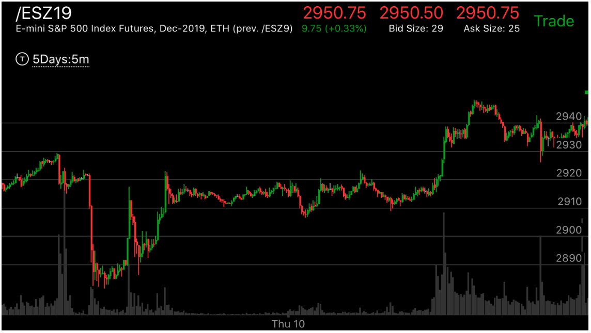
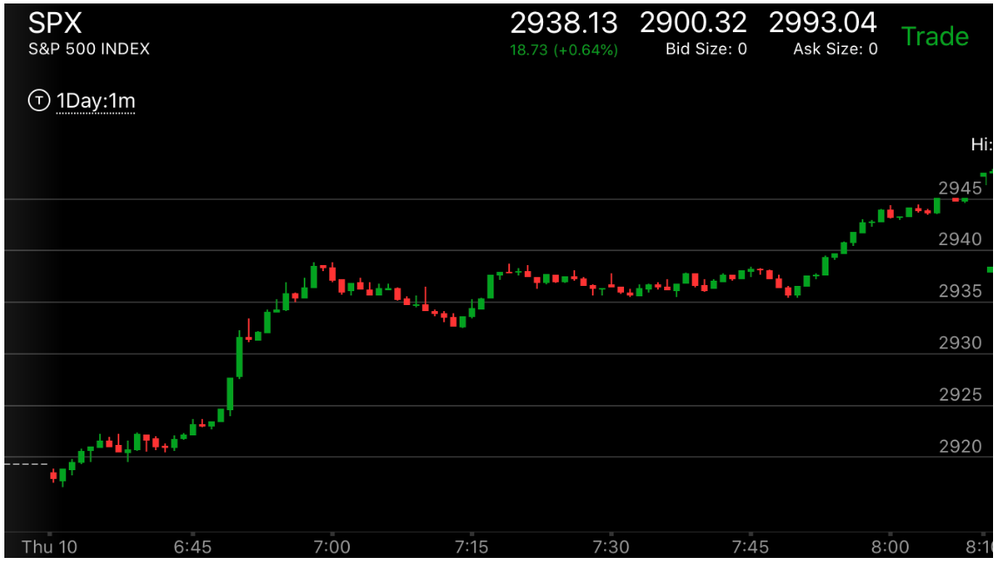

如何应对目标价格
- 目标价格定义1，一个是一个走势的起始点，这个走势如果被反转，它的反向走势，至少要超过这里。
- 目标价格定义2: 快慢点走势，慢点走出的走势新高或者新低。
- 在寻找目标价格的时候，要注意它前面是否已经出现了反转的走势，特别是快慢点走势，有时候，它已经反转了。
只是因为形状不够好，再次勉强越过几个点，然后就反转了。
- 如果已经找到了目标价格，那么如果大盘很快到达目标，而本身出现了一个反转的走势，而且在目标价格以外停留了一段时间，
着时间不能是一分钟，而且要超过好几分钟。
- 如果大盘不到目标价格，就开始拉回，或者长时间的震荡，它会大幅越过目标价格。绝对不能看见它一到目标价格就平仓了。


图示：前一个走势的开始是2888.它前一天收盘前反转，从2929下跌，开始了第一浪，走平后，
收盘后，大跌，刚刚超过2885，就开始长时间走平。这个已经是第二浪，而它在底部走平很久，做多的能量没有浪费。而目标价格2888
也已经达到了。这样这个走势就结束了。开始上涨了。而同样是这个走势，它在不到目标2929，而是在第二浪开始的地方，震荡了一晚上。
开盘后，它一举突破了2929这个前一个走势的点，然后大涨。